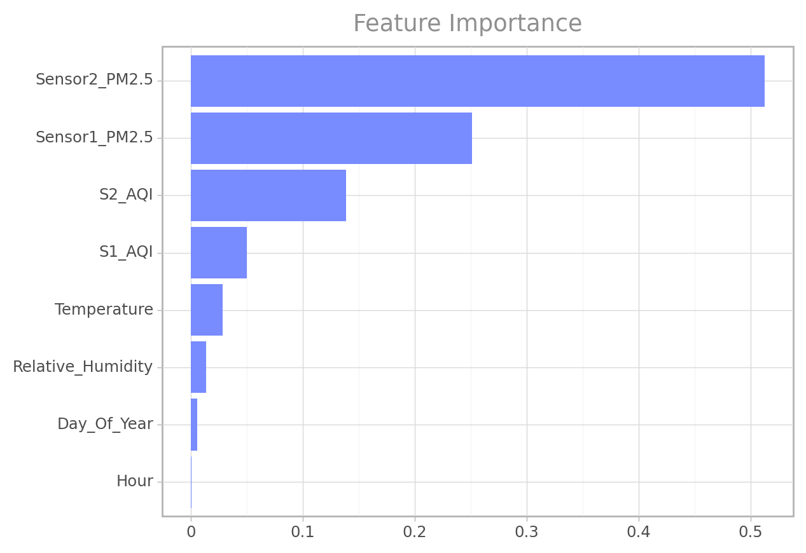

from sklearn.model_selection import KFold, cross_validate, cross_val_score, cross_val_predict # train_test_split,
from sklearn.preprocessing import StandardScaler
from sklearn.utils import resample
from sklearn.ensemble import RandomForestClassifier
from sklearn.tree import DecisionTreeClassifier
from sklearn.neighbors import KNeighborsClassifier
from sklearn.linear_model import LogisticRegression
from sklearn.impute import KNNImputer
from sklearn.model_selection import GridSearchCV
from sklearn.pipeline import Pipeline
from sklearn.compose import ColumnTransformer
from sklearn.metrics import accuracy_score, confusion_matrix, classification_report, ConfusionMatrixDisplay, precision_score, recall_scoreSensor Offset Prediction
Libraries
Feature Engineering
For the training set all missing values will be removed from the data.
Additional variables such as an ordinal air quality index (as integer) for both sensors will be added to the training set.
Also the hour and day of the year will be extracted from the datetime variable after which the datetime variable will be dropped with the Id variable as they are both features with high cardinality.
ord_train = train.sort_values(by="Datetime")
add_df = cfun.add_attributes(ord_train, drop_nan_value=True, fill_nan_value=False)
train_c = add_df.drop_missing_value()
train_c = add_df.add_air_quality_index()
train_c = add_df.add_period_variables(hour=True, dayofyear=True)
train_c = train_c.drop(["ID", "Datetime"], axis = 1)
train_c.info()C:\Users\AYOMIDE\vs-python\PM_ML_project\function.py:237: FutureWarning: Series.dt.weekofyear and Series.dt.week have been deprecated. Please use Series.dt.isocalendar().week instead.<class 'pandas.core.frame.DataFrame'>
Int64Index: 290014 entries, 116880 to 226302
Data columns (total 9 columns):
# Column Non-Null Count Dtype
--- ------ -------------- -----
0 Sensor1_PM2.5 290014 non-null float64
1 Sensor2_PM2.5 290014 non-null float64
2 Temperature 290014 non-null float64
3 Relative_Humidity 290014 non-null float64
4 Offset_fault 290014 non-null int64
5 S1_AQI 290014 non-null int64
6 S2_AQI 290014 non-null int64
7 Hour 290014 non-null int64
8 Day_Of_Year 290014 non-null int64
dtypes: float64(4), int64(5)
memory usage: 22.1 MBSeparating the label for the predictors.
outcome = "Offset_fault"
X = train_c.drop(outcome, axis = 1)
y = train_c[outcome]
feature_names = list(train_c.drop(outcome, axis = 1).columns)Scale all numeric features
num_features = list(X.select_dtypes("number").columns)
num_pipeline = Pipeline([
("std_scaler", StandardScaler())
])
full_pipeline = ColumnTransformer([
("num", num_pipeline, num_features)
])
X = full_pipeline.fit_transform(X)
Xarray([[-1.10957703, -1.01101351, 1.71196075, ..., 1.66087637,
0.66730492, 0.20484599],
[-1.08300205, -0.94242651, 1.71196075, ..., 1.66087637,
0.66730492, 0.20484599],
[-1.20189013, -1.22443398, 1.71196075, ..., 1.66087637,
0.66730492, 0.20484599],
...,
[ 0.11881666, 0.48919661, -1.67174045, ..., -0.52823302,
-0.62421669, -1.84915195],
[ 0.27721755, 0.2761243 , -1.67174045, ..., -0.52823302,
-0.62421669, -1.84915195],
[-0.01650596, -0.22243706, -1.67174045, ..., 0.56632168,
-0.62421669, -1.84915195]])Inital Selected Models
Multiple models will be used to _see the best that generalize well on the validation set.
log_reg = LogisticRegression(random_state=11)
dt_class = DecisionTreeClassifier(random_state=11)
rf_class = RandomForestClassifier(random_state=11, n_jobs=-1)
knn_class = KNeighborsClassifier(n_jobs=-1)
model = [log_reg, dt_class, rf_class, knn_class]
model_names = ["Logistic Regression", "Decision Tree", "Random Forest", "K-Neighbors"]Cross Validation
def cross_validation(model, x=X, y=y, model_name="model", cv=5):
y_pred = cross_val_predict(model, x, y, cv=cv, n_jobs=-1)
print(f"{model_name}\n{'='*50}")
print(f"Confusion Matrix ::-\n{confusion_matrix(y, y_pred)}")
print(50*"-","\n")
print(f"Accuracy :: {accuracy_score(y, y_pred)}\n")
print(classification_report(y, y_pred))For better model performance evaluation the training set will be divided into a smaller training set and a validation set (default will be 5 splits).
for mdl, mdl_name in zip(model, model_names):
cross_validation(mdl, model_name=mdl_name)
print("\n\n")Logistic Regression
==================================================Confusion Matrix ::-
[[171446 11417]
[ 25463 81688]]
--------------------------------------------------
Accuracy :: 0.8728337252684353
precision recall f1-score support
0 0.87 0.94 0.90 182863
1 0.88 0.76 0.82 107151
accuracy 0.87 290014
macro avg 0.87 0.85 0.86 290014
weighted avg 0.87 0.87 0.87 290014
Decision Tree
==================================================
Confusion Matrix ::-
[[162400 20463]
[ 19569 87582]]
--------------------------------------------------
Accuracy :: 0.8619652844345446
precision recall f1-score support
0 0.89 0.89 0.89 182863
1 0.81 0.82 0.81 107151
accuracy 0.86 290014
macro avg 0.85 0.85 0.85 290014
weighted avg 0.86 0.86 0.86 290014
Random Forest
==================================================
Confusion Matrix ::-
[[165178 17685]
[ 15173 91978]]
--------------------------------------------------
Accuracy :: 0.8867020212817313
precision recall f1-score support
0 0.92 0.90 0.91 182863
1 0.84 0.86 0.85 107151
accuracy 0.89 290014
macro avg 0.88 0.88 0.88 290014
weighted avg 0.89 0.89 0.89 290014
K-Neighbors
==================================================
Confusion Matrix ::-
[[158818 24045]
[ 39627 67524]]
--------------------------------------------------
Accuracy :: 0.7804519781803637
precision recall f1-score support
0 0.80 0.87 0.83 182863
1 0.74 0.63 0.68 107151
accuracy 0.78 290014
macro avg 0.77 0.75 0.76 290014
weighted avg 0.78 0.78 0.78 290014
Out of all the inital selected models, The Random Forest model have the best performance when we look at it accuracy score in predicting sensor device signal offsets. The model also looks promising in generalizing well on other data.
def eval_gs(gs, output="best_estimator"):
if output == "best_estimator":
return gs.best_estimator_
elif output == "best_param":
return gs.best_params_
elif output == "scores_table":
cv_res = gs.cv_results_
f_df = pd.DataFrame(cv_res["params"])
f_df["mean_test_score"] = cv_res["mean_test_score"]
f_df["rank_test_score"] = cv_res["rank_test_score"]
f_df["mean_train_score"] = cv_res["mean_train_score"]
return f_df.sort_values(by="rank_test_score", ascending=True)
elif output == "feature_importance":
feature_importances = grid_search.best_estimator_.feature_importances_
feat_imp = pd.DataFrame(sorted(zip(feature_names, feature_importances), reverse=True), columns = ["importance_score", "Feature"])
return feat_imp.sort_values(by = "Feature", ascending=False)
else:
raise ValueError("`output` variable was given a wrong value.")Hyperparameter Tuning
Using multiple random forest parameters to train the model on the data, in oreder to get the best combination of hyperparameter values.
param_grid = {"n_estimators": [100, 200, 300], "max_leaf_nodes": [10, 16], 'max_features':[3, 4]}
grid_search = GridSearchCV(rf_class, param_grid, cv=4, n_jobs=-1, return_train_score=True)
grid_search.fit(X, y)GridSearchCV(cv=4, estimator=RandomForestClassifier(n_jobs=-1, random_state=11),
n_jobs=-1,
param_grid={'max_features': [3, 4], 'max_leaf_nodes': [10, 16],
'n_estimators': [100, 200, 300]},
return_train_score=True)In a Jupyter environment, please rerun this cell to show the HTML representation or trust the notebook. On GitHub, the HTML representation is unable to render, please try loading this page with nbviewer.org.
GridSearchCV(cv=4, estimator=RandomForestClassifier(n_jobs=-1, random_state=11),
n_jobs=-1,
param_grid={'max_features': [3, 4], 'max_leaf_nodes': [10, 16],
'n_estimators': [100, 200, 300]},
return_train_score=True)RandomForestClassifier(n_jobs=-1, random_state=11)
RandomForestClassifier(n_jobs=-1, random_state=11)
Best Estimators
eval_gs(grid_search)RandomForestClassifier(max_features=4, max_leaf_nodes=16, n_jobs=-1,
random_state=11)In a Jupyter environment, please rerun this cell to show the HTML representation or trust the notebook. On GitHub, the HTML representation is unable to render, please try loading this page with nbviewer.org.
RandomForestClassifier(max_features=4, max_leaf_nodes=16, n_jobs=-1,
random_state=11)eval_gs(grid_search, "best_param"){'max_features': 4, 'max_leaf_nodes': 16, 'n_estimators': 100}eval_gs(grid_search, "scores_table")| max_features | max_leaf_nodes | n_estimators | mean_test_score | rank_test_score | mean_train_score | |
|---|---|---|---|---|---|---|
| 9 | 4 | 16 | 100 | 0.835939 | 1 | 0.846201 |
| 10 | 4 | 16 | 200 | 0.834090 | 2 | 0.845402 |
| 11 | 4 | 16 | 300 | 0.831949 | 3 | 0.843678 |
| 3 | 3 | 16 | 100 | 0.809878 | 4 | 0.818747 |
| 4 | 3 | 16 | 200 | 0.807188 | 5 | 0.817267 |
| 5 | 3 | 16 | 300 | 0.807185 | 6 | 0.816305 |
| 6 | 4 | 10 | 100 | 0.805216 | 7 | 0.812193 |
| 7 | 4 | 10 | 200 | 0.797896 | 8 | 0.805109 |
| 8 | 4 | 10 | 300 | 0.797492 | 9 | 0.805243 |
| 0 | 3 | 10 | 100 | 0.781183 | 10 | 0.787738 |
| 2 | 3 | 10 | 300 | 0.777797 | 11 | 0.783745 |
| 1 | 3 | 10 | 200 | 0.777648 | 12 | 0.784164 |
Feature Importance
Finding the relative importance of each feature for making accurate predictions.
ft_imp = eval_gs(grid_search, "feature_importance")
ft_imp| importance_score | Feature | |
|---|---|---|
| 1 | Sensor2_PM2.5 | 0.512644 |
| 2 | Sensor1_PM2.5 | 0.250991 |
| 3 | S2_AQI | 0.138374 |
| 4 | S1_AQI | 0.049779 |
| 0 | Temperature | 0.028415 |
| 5 | Relative_Humidity | 0.013785 |
| 7 | Day_Of_Year | 0.005353 |
| 6 | Hour | 0.000660 |
(
ggplot(ft_imp, aes(x="reorder(importance_score, Feature)", y="Feature")) +
geom_col(fill="#788BFF") +
coord_flip() +
labs(x="", y="", title="Feature Importance") +
theme_light() +
theme(plot_title= element_text(color="#8F8F8F"))
)
<ggplot: (101708896235)>Engineering The Test Set
All missing values will be imputed with their respective median value and all other feature transformation done on the train set will be used on the test set.
test = pd.read_csv('data/test.csv', parse_dates = ['Datetime'])
ord_test = test.sort_values(by="Datetime").reset_index(drop=True)
add_df = cfun.add_attributes(ord_test, drop_nan_value=False, fill_nan_value=True)
test_c = add_df.fill_missing_value(fill_fun = "median")
test_c = add_df.add_air_quality_index()
test_c = add_df.add_period_variables(hour=True, dayofyear=True)
test_c = test_c.drop(["ID", "Datetime"], axis = 1)
test_c = full_pipeline.transform(test_c)C:\Users\AYOMIDE\vs-python\PM_ML_project\function.py:237: FutureWarning: Series.dt.weekofyear and Series.dt.week have been deprecated. Please use Series.dt.isocalendar().week instead.final_model = grid_search.best_estimator_
final_prediction = final_model.predict(test_c)samplesubmission = pd.read_csv('data/SampleSubmission.csv')accuracy_score(samplesubmission["Offset_fault"], final_prediction)0.7908621948634197confusion_matrix(samplesubmission["Offset_fault"], final_prediction)array([[100725, 26636],
[ 0, 0]], dtype=int64)print(classification_report(samplesubmission["Offset_fault"], final_prediction)) precision recall f1-score support
0 1.00 0.79 0.88 127361
1 0.00 0.00 0.00 0
accuracy 0.79 127361
macro avg 0.50 0.40 0.44 127361
weighted avg 1.00 0.79 0.88 127361
The test set seems to have an unusual task of predicting just one class which was the time the PM sensors where considered to have no offset faults. That been said, the model only detect that there were no fault in the sensor signals 79% of the time. Given that there are only 0s i.e non offset sensor signals we have a percision of 100%.
Saving Fitted Model
import pickle
with open("pm2.5_sensor_offset.pkl", "wb") as f:
pickle.dump(final_model, f)Function to easily make future predictions
def make_predictions(data_file_path, model_file_path):
"""
param: data_file_path : The file path to the new set of records.
param: model_file_path: The file path to the pickle serialized file.
return: pandas serise with predicted values.
"""
# data transformation
from function import add_attributes
from pandas import Series
ord_rec = test.sort_values(by="Datetime").reset_index(drop=True)
add_df = add_attributes(ord_rec, drop_nan_value=False, fill_nan_value=True)
rec_c = add_df.fill_missing_value(fill_fun = "median")
rec_c = add_df.add_air_quality_index()
rec_c = add_df.add_period_variables(hour=True, dayofyear=True)
rec_c = rec_c.drop(["ID", "Datetime"], axis = 1)
rec_c = full_pipeline.transform(rec_c)
# Load model
with open(model_file_path, "rb") as f:
model = pickle.load(f)
# Generate predictions
y_preds = model.predict(rec_c)
# keep predictions in a pandas series
y_preds = Series(y_preds, index=ord_rec, name="pm2.5_sensor_offsets")
return y_preds